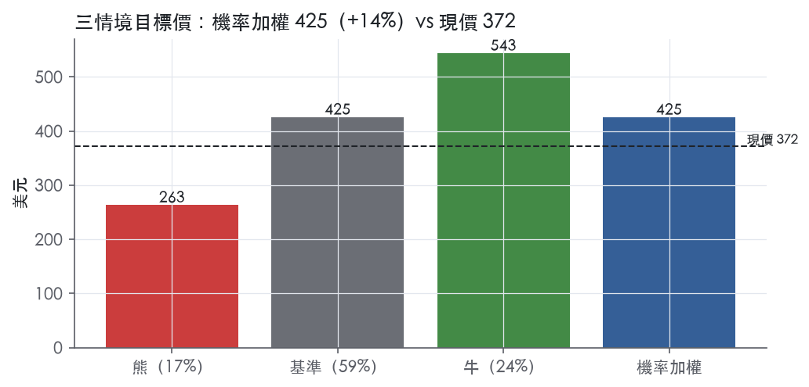
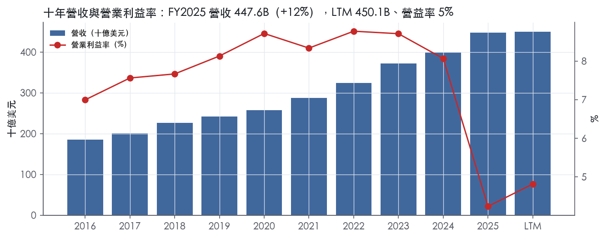
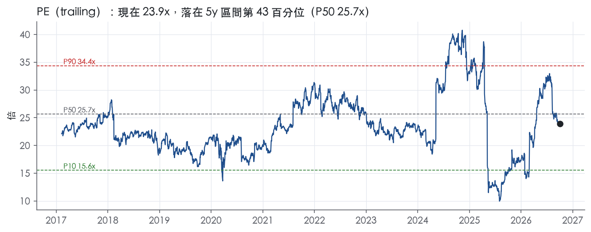
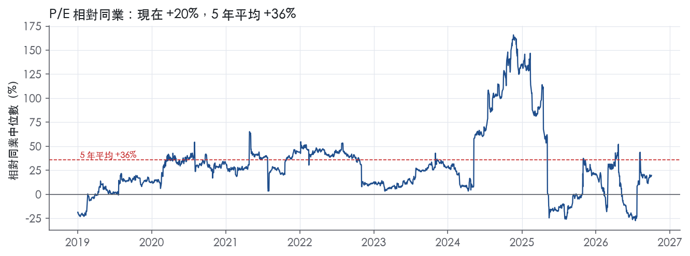
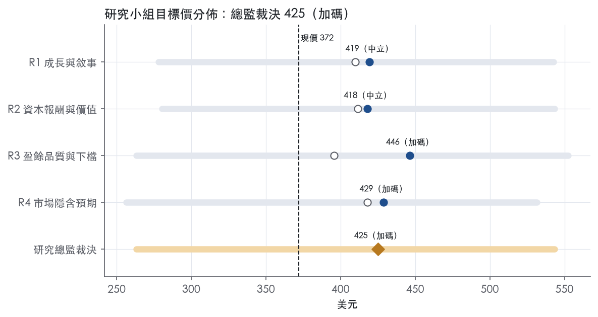
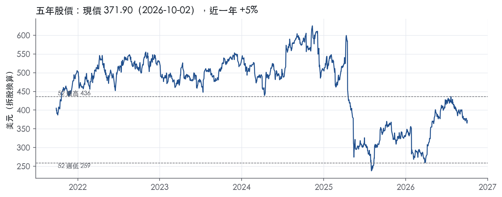

評等總表 › 醫療保健 › UNH
市場付了修復未付續升，溫和看多｜評等 加碼｜目標價 425
| 評等 | 加碼（邊界，鄰近中立） |
| 12 個月目標價 | 425 美元 |
| 現價 | 371.90 美元（2026-10-02） |
| 預期報酬 | 股價 +14.3%＋股息 2.4%＝總報酬 +16.7%；同業籃門檻 10.2%，超額 +6.5% |
| 估值方法 | P/E 19.5x，套在第 5–8 季的EPS（也就是一年後的未來四季） |
| 三情境 | 熊 263／基準 425／牛 543 |
| 研究流程 | 四位研究員兩輪辯論＋研究總監裁決 |
| 資料來源 | SEC EDGAR XBRL、Tiingo、FRED（全免費） |
市場付了修復未付續升，溫和看多（研究總監裁決，四位研究員兩輪辯論後）
評等 加碼（邊界，鄰近中立）｜12 個月目標價 425 美元（總監三情境機率加權 426 與研究員中位數 424 各半）｜現價 371.90（2026-10-02）
預期報酬：股價 +14.3%＋股息 2.4%＝總報酬 +16.7%。同業籃門檻 10.2%，超額 +6.5%，離中立的分界不到三個百分點，屬邊界評等（落在其他級距的機率約四成）。
估值方法：P/E 19.5x，套在第 5–8 季的EPS（也就是一年後的未來四季）。三情境：熊 263（17%）／基準 425（59%）／牛 543（24%）。
什麼會讓研究總監改變看法：2026Q3 adjusted MCR 超出 88.8%+50bp 上緣且公司下修全年、或 2027 年 2 月 CMS 2028 年 MA 費率預告低於成本趨勢，轉中性並把熊機率提到 25% 以上；2027 年指引營益率明顯高於 6.0% 且 Optum Health 回正，基準改採 R3 的營益率路徑、倍數上調至帶 P50 21x。
| 過去四季（實際，FY2026Q2） | 未來四季 | 第 5–8 季 | 第 9–12 季 | |
|---|---|---|---|---|
| 營收（B） | 450.1B | 452.4B | 475.0B | 503.5B |
| 營收成長 | 6.5% | 0.5% | 5.0% | 6.0% |
| 營業利益率 | 4.8% | 5.6% | 6.0% | 6.4% |
| EPS（美元） | 15.54 | 18.92 | 21.81 | 25.22 |
| EPS 成長 | -32.6% | 21.7% | 15.3% | 15.6% |
| 每股股息（美元） | 8.95 | 8.95 | 8.95 | 8.95 |
| P/E（現價） | 23.9x | 19.7x | 17.1x | 14.7x |
| 股息殖利率（現價） | 2.4% | 2.4% | 2.4% | 2.4% |
過去四季為申報數字；預測為研究總監的假設、程式計算。倍數與殖利率都用現價計算，用來看現價對應各期獲利的高低。
| 情境 | 機率（歷史） | 故事 | 未來四季營收成長 | 第 5–8 季營益率 | 倍數 | 目標價 | 股價漲跌 |
|---|---|---|---|---|---|---|---|
| 熊 | 17%（15%） | 主要風險表第 1、2 條：2027 年 MA 訂價跟不上成本趨勢，UnitedHealthcare 與 Optum Health 全額責任合約雙重曝險，利潤率退回 FY2025 調整後谷底但不跌破，回購停止，倍數近帶 P10 | 0.5% | 4.8% | 16.5x | 263 | -29.3% |
| 基準 | 59%（60%） | 營收近乎持平後恢復中個位數，Q5–Q8 營益率 6.0% 在指引 5.5% 之上續升一輪，倍數守在帶 P25–P50 之間 | 0.5% | 6.0% | 19.5x | 425 | 14.3% |
| 牛 | 24%（25%） | 一年期合約重新訂價奏效、adjusted MCR 落指引下緣、Optum Health 回正，營益率接近但不到十年均值 7.7%，ROIC 回升讓倍數回到帶 P50 | 2.0% | 6.8% | 21.0x | 543 | 46.1% |
目標價由程式依研究總監的驅動與倍數計算；機率由研究總監給定。括號內是歷史頻率：把這檔股票過去十年 12 個月報酬的波動形狀，置中在基準情境，結果落在各情境附近的比例。

四位研究員用不同方法各自估值，回應研究總監的質疑後交出第二輪，最後由總監逐點裁決。各研究員的主張見第七章，裁決理由見第八章，完整論證見《研究底稿》。
| 立場（一輪→二輪） | 加權目標價（一輪→二輪） | 評等（一輪→二輪） | 第二輪倍數 | 熊～牛目標價 | |
|---|---|---|---|---|---|
| R1 成長與敘事 | 中性→中性 | 410→419 | 中立→中立 | 21.0x | 278～543 |
| R2 資本報酬與價值 | 看多→中性 | 411→418 | 中立→中立 | 19.5x | 280～543 |
| R3 盈餘品質與下檔 | 中性→看多 | 396→446 | 中立→加碼 | 19.0x | 263～553 |
| R4 市場隱含預期 | 看多→中性 | 418→429 | 中立→加碼 | 19.5x | 256～532 |
| 研究總監裁決 | 看多 | 425 | 加碼 | 19.5x | 263～543 |
目標價由程式依各自的驅動與倍數計算；評等＝機率加權總報酬 − 同業籃門檻。
UnitedHealth Group 是一家由兩個互補業務構成的健康照護與福祉公司：UnitedHealthcare（健康保險）與 Optum（健康服務）¹。公司使命是幫助人們活得更健康，並讓健康體系對每個人都運作得更好¹。Optum 服務對象涵蓋需要照護的患者與消費者、提供照護的醫師與醫院、支付照護費用的雇主與政府機構，以及從事藥品與醫療科技研發的生命科學公司¹。UnitedHealthcare 則面向個人、雇主與公共部門提供全方位健康福利，分為 Employer & Individual、Medicare & Retirement 與 Community & State 三塊業務¹。2025 年度來自 CMS 的保費收入占公司合併總營收的 44%，大多由 Medicare & Retirement 貢獻¹。換句話說，UNH 的營收根基是政府醫療保險（Medicare/Medicaid）計畫，Optum 則是把這份保費流量轉換成服務與藥品毛利的加值引擎。
公司有四個可報導分部：Optum Health、Optum Insight、Optum Rx 與 UnitedHealthcare¹。自 2026 年 1 月 1 日起，原屬 Optum Health 的 Optum Financial（含 Optum Bank）將改歸入 Optum Insight，可報導分部維持不變¹。FY2025 UnitedHealthcare 營收 344.9B 美元，年增 16%²；Optum 營收 270.6B 美元，年增 7%²。
Optum Health 提供以患者為中心的照護、照護管理與健康財務服務，服務 95 百萬名消費者，並與逾 100 家健康支付方合作¹；FY2025 營收 102.0B 美元，年減 3%，營業虧損 278M 美元（2024 年營業利益為 7.8B 美元），調整後營業利益 2.3B 美元（2024 年為 7.9B 美元），主因是 Medicare 補助縮減與醫療成本趨勢上升²。Optum Financial 透過近 26 百萬個消費者帳戶管理逾 27B 美元資產¹。
Optum Insight 提供數據分析、顧問與技術化管理服務，FY2025 營收 19.4B 美元，年增 4%（即增加 660M 美元）；營業利益 2.6B 美元（2024 年 3.1B 美元），調整後營業利益 3.7B 美元（2024 年 4.4B 美元），受新產品投入成本拖累²。其訂單後積壓（backlog）截至 2025 年底約為 31.1B 美元，其中 18.3B 美元預計於未來 12 個月內實現，31.1B 美元中有 12.9B 美元與關係人協議相關；2024 年底為 32.8B 美元¹。
Optum Rx 透過約 64,000 家零售藥局網路，加上居家配送、特殊藥局與罕病/基因療法支援服務，提供全方位藥局照護服務¹。2025 年 Optum Rx 管理 188B 美元的藥品支出，其中近 87B 美元為特殊藥品支出¹。FY2025 營收 154.7B 美元，年增 16%，由藥局服務與新舊客戶處方量成長帶動；營業利益 7.2B 美元（2024 年 5.8B 美元），調整後處方量成長至 1.66B 筆（2024 年為 1.62B 筆）²。
UnitedHealthcare Employer & Individual FY2025 營收 79.2B 美元（2024 年 78.2B 美元），服務人數因自保型雇主方案成長但被團體全保與個人險流失抵銷而減少 80,000 人²。Medicare & Retirement FY2025 營收 171.3B 美元，年增 31.8B 美元即 23%，受惠於服務人數成長與 IRA Part D 影響²。Community & State FY2025 營收 94.4B 美元，年增 17%，由複雜需求人群成長與 Medicaid 費率上調驅動，服務人數因州資格審查變化初步減少 55,000 人²。三個分部規模差異大，Medicare & Retirement 已是 UnitedHealthcare 內最大引擎。
公司客戶群以美國本土為主，橫跨雇主、個人、政府計畫與健康系統參與者，10-K 未揭露具體海外營收占比。UnitedHealthcare Employer & Individual 截至 2025 年底為 29.7 百萬人提供醫療服務取得途徑，透過顧問或直銷、經紀人、批發代理、專業雇主組織及私營交易平台等多元通路銷售¹。Medicare & Retirement 業務下，Medicare Advantage 服務 8.4 百萬人，Medicare Part D 共有 10.4 百萬人投保（其中 2.8 百萬人為獨立 Part D 計畫），Medicare Supplement 服務 4.3 百萬名長者¹；HouseCalls 計畫 2025 年執行了 3.1 百萬次居家臨床預防訪視¹。Community & State 業務參與 32 個州與哥倫比亞特區的計畫，服務近 7.4 百萬人，其中 1.2 百萬人是透過 19 個州的 Medicaid 擴大方案（ACA 下）納保¹。CMS 保費收入占公司 2025 年合併總營收的 44%，顯示政府計畫對公司營收結構的決定性影響¹。通路上公司高度依賴直銷團隊、經紀人與公部門合約，而非零售終端消費者自發購買。
2025 年第三季營收 113.2B 美元，年增 12%；GAAP EPS 2.59 美元，調整後 EPS 2.92 美元；醫療成本率（MCR）89.9%，符合第二季所揭露的預期；營運現金流 5.9B 美元，為淨利的 2.3 倍³。UnitedHealthcare 當季營收 87.1B 美元、年增 16%，Optum 營收 69.2B 美元、年增 8%，主因 Optum Rx 成長³。公司當時將 2025 年 EPS 展望上調至至少 14.90 美元、調整後至少 16.25 美元³。
2025 年第四季營收 113.2B 美元；全年營收 447.6B 美元，年增 12%²。第四季 GAAP EPS 僅 0.01 美元，調整後 EPS 2.11 美元，主因是一筆稅後 1.6B 美元（每股 1.78 美元）的一次性費用，內容包括網路攻擊最終成本 799M 美元、淨資產出售收益 442M 美元，以及重組與其他費用 2,521M 美元²。全年 GAAP EPS 13.23 美元、調整後 EPS 16.35 美元，營運現金流 19.7B 美元，為淨利 1.5 倍；負債/資本比 43.9%，公司長期目標為 40.0%²。公司同時提出 2026 年展望：營收目標逾 439.0B 美元、營業利益逾 24.0B 美元（營業利益率 5.5%）、調整後 EPS 逾 17.75 美元、營運現金流逾 18.0B 美元，醫療成本率目標 88.8%±50 個基點²。
FY2026Q1 營收 111.72B 美元，年增 2.0%，EBITDA 10.02B 美元、營益率 8.0%，EPS 6.90 美元。FY2026Q2 營收 112.03B 美元，年增 0.4%，EBITDA 9.03B 美元、營益率 7.1%，EPS 6.04 美元。兩季營收成長明顯放緩但獲利率較 2025 年同期大幅回升，顯示公司在醞釀第四季巨額一次性費用後，2026 年上半年已重回雙位數利潤率區間，印證公司「right-sizing」與訂價紀律策略初見成效。
公司將 2026 年展望定調為「透過更強的營運紀律與精準執行，實現穩健的績效改善與利潤率擴張」²。管理層表示過去六個月的重點包括重新聚焦關鍵市場、產品與地理區域，針對更高醫療成本趨勢與政策變化調整訂價紀律，以及重新調整 Optum 營運基準並強化整合式價值醫療承諾²。公司亦強調持續採用新技術與人工智慧，讓高品質照護更容易被找到、更簡單被導航，並更可負擔²。在 10-K 層面，公司將策略定義為以數據分析與臨床專長，協助醫療體系從論量計費轉向以價值為基礎的績效給付模式¹。Optum Rx 則表示正加速整合醫療、藥局與行為健康照護，將藥師嵌入患者照護團隊核心¹。整體而言，公司的敘事是先用一次性費用「清乾淨」2025 年的問題（網路攻擊、虧損合約、重組），再用訂價紀律與 Optum 重新定位去推動 2026 年利潤率回升，而非追求營收規模擴張。2026 年營收展望較 2025 年實際值下滑，顯示公司主動收縮低利潤業務以保護利潤率，是一次典型的「以利潤換規模」轉向。能否在 Medicare Advantage 資金環境持續緊縮下兌現 88.8% 的醫療成本率目標，將是觀察此策略成敗的關鍵指標。

UNH 的護城河評為窄，趨勢變窄。我們有把握未來 5 年 ROIC 仍高於資本成本，但沒有把握撐到 10 年以上。理由是規模與整合帶來的成本優勢仍在，但最新 ROIC 11.2%只略高於資本成本代理值 10.2%，超額報酬已經被政府費率與醫療成本趨勢吃掉大半。
UNH 的優勢來自成本優勢、轉換成本與無形資產中的監理執照三類，網路效應與效率規模沒有足夠證據，不列入。
成本優勢：這是最主要的來源。公司自述 UnitedHealthcare 的市場地位建立在「competitive medical and operating cost positions」¹。Optum Rx 透過約 64,000 家零售藥局網路提供服務¹。2025 年 Optum Rx 管理 188B 美元藥品支出，其中近 87B 美元為特殊藥品¹。這個量級給了 PBM 對藥廠與藥局的議價力，保險端則靠廣大網路取得折扣價格。UnitedHealthcare 透過自身網路安排折扣就醫管道，並用 Optum 的能力協調照護、分析成本趨勢¹。
轉換成本：這項優勢集中在 Optum Insight。Optum Insight 的軟體、資訊產品與專業服務多半跨越數年交付¹。2025 年底積壓訂單約 31.1B 美元，其中 18.3B 美元預計 12 個月內實現¹。醫院營收循環、支付稽核等系統嵌入客戶流程，更換的作業風險高，續約可預期性強。
無形資產（執照）：保險與 HMO 子公司必須在營業所在的每個司法管轄區取得執照，各州另設最低資本或限制性現金準備要求¹。這些要求構成新進者的進入門檻，但對既有大型同業沒有區隔效果。品牌與專利不構成護城河，公司自己也說「not substantially dependent on any single patent or group of related patents」¹。
長期數字支持「有護城河」，近兩年的數字不支持「寬」。ROIC 十年平均 18.7%，扣掉資本成本後平均超額 8.4%，有資料的 9 年全部高於資本成本。ROIC 標準差 2.9%、營業利益率標準差 1.3%，FY2017–FY2023 的 ROIC 落在 18.9%–21.6%，這段期間的穩定度符合寬護城河的樣貌。
衝突出在最新一期，ROIC 跌到 11.2%，營業利益率 4.2%，ROE 12.2%，三項都是十年最低。FY2024 的 ROIC 已經降到 17.9%，所以這不是單一年度的事件，而是連續兩年下行。FY2025Q4 的一次性費用放大了跌幅，但 Optum Health 全年營業虧損 278M 美元，2024 年則有營業利益 7.8B 美元，主因是 Medicare 補助縮減與醫療成本趨勢上升²。這屬於結構性壓力，不是會計雜音。
我們不下修到「無」，因為 FY2026Q1 與 FY2026Q2 的營益率已回到 8.0% 與 7.1%，接近十年平均 7.7%。這顯示定價紀律仍能把利潤拉回來。
毛利率十年平均 88.5%、標準差 0.8%，但這個指標不適用於醫療成本占大宗的保險業務，我們不拿它當護城河證據。
最大的侵蝕來源是政府定價權。CMS 保費收入占 2025 年合併總營收的 44%¹。CMS 的給付受健康狀態申報規範約束，CMS 也有權稽核公司的合規情形¹。費率由對手方決定，UNH 的規模優勢在這塊轉不成定價權。
第二是 PBM 立法。公司承認聯邦與州層級規範 PBM 的立法可能影響其與藥廠及網路藥局的商業做法¹。相關規範可能限制或排除限縮網路、處方集分級等做法¹。這會直接削弱 Optum Rx 的議價優勢。
第三是垂直整合的監理風險。部分州正考慮擴大醫療執業公司化（corporate practice of medicine）法律的範圍，可能影響公司在這些州與醫師的合作結構¹。
第四是競爭與轉換成本的鬆動。公司自述所處市場高度競爭，對手從新創到 Fortune 50 企業都有¹。Optum Insight 的積壓訂單從 2024 年底的 32.8B 美元降到 31.1B 美元¹，轉換成本優勢沒有在擴大。
目標倍數應與同業持平，不給溢價。護城河評級是窄且變窄，最新 ROIC 對資本成本的超額幾乎歸零，現在不能用 FY2017–FY2023 的高 ROIC 年代當作溢價依據。若 FY2026 下半年營益率守住十年平均，且 ROIC 回到資本成本之上有明確差距，再重新評估溢價空間；在那之前，P/E 23.9x（對應 trailing P/E）不宜往 5 年 P90 34.4x方向推。
| 指標 | 最新 | 十年平均 | 標準差 | 最低 | 最高 |
|---|---|---|---|---|---|
| ROIC | 11.2% | 18.7% | 2.9% | 11.2% | 21.6% |
| 毛利率 | 88.7% | 88.5% | 0.8% | 86.8% | 89.6% |
| 營業利益率 | 4.2% | 7.7% | 1.3% | 4.2% | 8.8% |
| FCF 利潤率 | 3.6% | 6.1% | 1.3% | 3.6% | 7.8% |
| ROE | 12.2% | 21.9% | 4.6% | 12.2% | 25.7% |
程式計算。資本成本代理值（10 年債＋5%）：10.2%；ROIC 平均減資本成本：8.4%；ROIC 有資料的 9 年中，高於資本成本 9 年。
現金轉換（CFO／NI、FCF／NI）全部綠燈且優於十年均值，應計比率長期為負，顯示盈餘不是靠應計堆出來的【量化底稿】。真正的風險在資產負債表端：淨負債／EBITDA 與利息保障兩項轉黃，而且是營業利益率結構性下滑帶出來的，不是單一口徑問題。
CFO／NI 的 LTM 值 1.91x、近三年均值 1.54x、十年均值 1.40x，三個時間窗都站在綠燈門檻之上，FCF／NI 同樣逐步優於歷史（LTM 1.67x vs 十年 1.21x）【量化底稿】。應計比率 LTM 為 -4.1%、近三年與十年均為 -2.8%，負值代表淨利其實低於現金流隱含水準，屬於保守而非灌水【量化底稿】。公司自己也說 2025 全年「cash flows from operations were $19.7 billion, or 1.5 times net income」²。季度數字看起來有落差：FY2025Q4 CFO 僅 1.11B，遠低於 FY2025Q3 的 5.95B，但這是應收與理賠給付時點的季節性效果，公司解釋「Days claims payable were 44.1...the sequential decline was driven by claims payment timing」²，不是盈餘品質惡化。整體結論：即使 2025 年 GAAP 淨利重摔，現金流沒有跟著等比例塌陷，現金對盈餘的支撐這一項是本章唯一全線綠燈的部分。
FY2025 GAAP 稀釋 EPS 13.23、調整後 EPS 16.35，中間差了約 3.1 美元²。差距主要來自第四季一次性費用，稅後淨影響 $(1,622)M、每股影響 $1.78，拆解為：Final Cyberattack Costs $(799)M、Net Portfolio Divestitures $442M（獲利項）、Restructuring and Other $(2,521)M，稅前合計 $(2,878)M²。公司定性為「largely non-cash and were excluded from adjusted earnings」²。我的判斷是：這三項不能照單全收地加回去——網路攻擊善後成本是真實現金支出（法律、補救、賠償），即便標記為最終一次性，仍反映過去治理缺口的真實代價；重整費用裡的「workforce reductions」部分也是真金白銀的現金費用，只有不動產減損、虧損合約評估是非現金；反而是資產處分收益 442M 這種一次性利得，加回後的調整 EPS 本就該再往下修正才公允。2026 年展望把 GAAP 與調整後 EPS 的差距大幅收斂到 17.10 對 17.75，顯示公司自己預期這類一次性項目不會重演²，但這仍是「管理層的預期」而非已實現數字。
淨負債從 FY2016 的 19.70B 一路爬升到 FY2025 的 50.27B，而同期 EBITDA 卻從 FY2023 高點 36.33B 掉到 FY2025 的 23.32B，兩頭夾擊把淨負債／EBITDA LTM 推到 1.61x，高於十年均值 1.16x【量化底稿】。公司揭露 Debt-to-capital ratio 43.9%（FY2025 年底），高於「long-term debt-to-capital ratio of 40.0%」的目標，且表示「expects to reach that level in 2026」²，等於自認目前槓桿偏高。資本配置端，（股利＋回購）／淨利 LTM 69.0%、但近三年均值衝到 97.5%，接近把整段淨利都還給股東，同一時間淨負債卻在增加，兩者合在一起看，是「用舉債維持回饋」的典型訊號。好消息是稀釋股數仍在淨減少（LTM -0.4%、近三年 -1.4%）【量化底稿】，顯示回購確實壓低了股數而非被 SBC 稀釋掉——SBC／營收本身也只有 0.2–0.3%，對 UNH 這種規模完全不是問題【量化底稿】。
淨負債／EBITDA（黃燈）：真問題，但一半是分母效應。EBITDA 的下滑主因是 2025 年營業利益率從 FY2023 的 8.7% 壓到 4.2%【量化底稿】，公司解釋為「CMS’s Medicare funding reductions and changes from the Inflation Reduction Act combined with accelerating medical cost trends」導致調整後醫療成本率年增 340bps²。這不是一次性會計調整，是真實的定價／成本周期逆風，所以不能當假警報忽略，但 2026 年展望預期醫療成本率改善 30bps、營業利益率回到 5.5%，若兌現，這個黃燈有機會自然轉綠²。
利息保障倍數（黃燈）：同一個驅動因子——營業利益被壓縮，不是利息支出暴增導致。LTM 5.57x 遠低於十年均值 11.3x，近三年均值 7.66x 則顯示惡化是近一兩年才發生、非長期結構性債務問題【量化底稿】。判定為真實但有望隨 2026 年利潤率修復而改善，暫不視為資產負債表崩壞的訊號。
現金轉換、應計比率、SBC、股數稀釋、應收／存貨成長（全部綠燈）：沒有紅旗需要解釋，數字本身已支持「盈餘有現金撐、沒有灌水應計、股權酬勞成本低、股數確實在減少」的結論【量化底稿】，此處不重複展開。
（股利＋回購）／淨利 近三年 97.5%（雖未觸發紅燈但值得點名）：這不是程式判定的紅旗，但搭配同期淨負債上升來看，屬於「可能在用資產負債表餘力撐股東回饋」的灰色訊號，不是會計口徑假警報，是資本配置選擇的真實結果。
盈餘品質基礎是穩（現金撐得住），但 2025 年的 GAAP 數字被重整與網攻善後成本拖低，估值應該用「調整後 EPS 扣掉網攻與裁員現金成本之後」的中間值，而不是直接套用公司給的 adjusted EPS 16.35，也不能用 GAAP 13.23 當作永久基準，建議對調整後 EPS 打一個小幅折扣。槓桿（淨負債／EBITDA 1.61x、debt-to-capital 43.9% 高於 40% 目標）目前還不到限制倍數的程度，但在 2026 年利潤率修復兌現之前，不支持套用歷史溢價倍數，目前 23.9x trailing P/E 已接近十年中位數 22.6x，沒有便宜可言，應等待槓桿與利息保障轉綠再給更高倍數。
| 項目 | LTM | 近三年 | 十年 | 燈號 | 規則 |
|---|---|---|---|---|---|
| 營業現金流／淨利 | 1.91x | 1.54x | 1.40x | 綠 | ≥1.00x 綠、<0.80x 紅 |
| 自由現金流／淨利 | 1.67x | 1.31x | 1.21x | 綠 | ≥0.90x 綠、<0.60x 紅 |
| 應計比率（(淨利−CFO)／平均總資產） | -4.1% | -2.8% | -2.8% | 綠 | ≤0.0% 綠、>5.0% 紅 |
| SBC／營收 | 0.2% | 0.3% | 0.3% | 綠 | ≤3.0% 綠、>8.0% 紅 |
| 淨負債／EBITDA | 1.61x | 1.46x | 1.16x | 黃 | ≤1.50x 綠、>3.00x 紅 |
| 利息保障倍數（營業利益／利息） | 5.57x | 7.66x | 11.3x | 黃 | ≥8.00x 綠、<3.00x 紅 |
| 稀釋股數年變動 | -0.4% | -1.4% | -0.7% | 綠 | ≤0.0% 綠、>3.0% 紅 |
| （股利＋回購）／淨利 | 69.0% | 97.5% | 69.8% | 綠 | ≥50.0% 綠、<0.0% 紅 |
| 應收帳款成長 − 營收成長（FY2025） | -8.9pp | — | — | 綠 | ≤5pp 綠、>15pp 紅 |
| 存貨成長 − 營收成長（FY2025） | -25.0pp | — | — | 綠 | ≤5pp 綠、>15pp 紅 |
程式計算；燈號以 LTM（無則近三年平均）判定。
| 風險 | 觸發指標（看什麼數字、在哪裡看） | 對 EPS 的影響方向與粗略幅度 | 未來 12 個月發生機率（高／中／低） | 出處 |
|---|---|---|---|---|
| 醫療成本率（MCR）超出訂價假設，風險型保費佔比近 80% | 每季 adjusted MCR vs. 88.8%±50bp 目標（8-K）；2025 年 adjusted MCR 已從 85.5% 升至 88.9%，年增 340bp | 負向、大：2025 年 MCR 惡化直接把全年 adjusted EPS 從隱含高點拉低，第四季 GAAP EPS 僅 0.01 美元 | 高 | ⁴² |
| CMS／政府資金政策變動（Medicare Advantage 費率下調、IRA Part D 影響） | CMS 每年 2月 公告的 MA 費率通知（Rate Announcement）；CMS 保費占總營收 44% | 負向、大：公司明確將 2025 年營業利益率下滑歸因於「Medicare funding reductions and Inflation Reduction Act impacts」 | 高 | ¹² |
| 大規模法律訴訟與政府調查（False Claims Act、集體訴訟、反壟斷） | 新增重大訴訟揭露、Item 3 Legal Proceedings 更新、和解金公告 | 負向、中：公司為訴訟自保，若和解規模超出已提列準備，直接沖淨利；無具體金額可引用 | 中 | 10-K 年報 FY2025 Item 1A（風險因素） |
| 網路安全事件／資料外洩重演（已有 Change Healthcare 2024 事件先例） | 新增重大資安事件揭露、8-K Item 1.05 網路安全事件通報 | 負向、中：2025 Q4 charge 中「Final Cyberattack Costs」稅後 799M 美元，顯示單一事件可造成數億美元級損失 | 中 | ⁴² |
| 商譽與無形資產減損（併購整合失敗） | 商譽佔總資產比重（現為 42%、131B 美元）、每年減損測試結果 | 負向、中：若觸發減損，直接衝擊淨利與股東權益，但目前未有具體減損金額可引用 | 低 | 10-K 年報 FY2025 Item 1A（風險因素） |
醫療成本管理失誤是這家公司最直接、最容易重演的風險，因為風險型產品佔總營收近 80%，定價是以固定一年期合約鎖定的，一旦實際醫療成本超出估計，當期無法透過漲價回收⁴。2025 年全年 adjusted MCR 從 85.5% 跳升至 88.9%，年增達 340 個基點，公司將原因歸為 CMS 的 Medicare 資金削減、IRA 對 Part D 的影響，以及加速的醫療成本趨勢²。2026 年公司把 MCR 目標訂在 88.8%±50bp，這個數字是未來四季最該盯的監測指標，偏離目標上緣就是 EPS 下修的先行訊號²。
CMS 與政府計畫政策風險和第一條高度連動但觸發源不同：這是監管機關主動改變費率公式或報銷規則的風險，而非公司自己估錯成本。CMS 保費收入占公司 2025 年合併總營收的 44%，意味著任何一次 MA 費率通知的調整都會對公司營收基礎產生結構性影響¹。UnitedHealthcare 2025 年營業利益率從 5.2% 滑落至 2.7%，公司自己指出主因正是「Biden-era Medicare funding reductions」疊加 IRA 衝擊與偏高的醫療成本趨勢²。每年 2 月 CMS 發布的最終費率通知，是本風險最明確、最可排程監測的時點。
法律訴訟與政府調查風險對 UNH 而言是結構性常態，公司在 10-K 明白表示「we are routinely made party to a variety of private party and governmental legal actions and investigations」，範圍涵蓋理賠爭議、反壟斷、吹哨人條款（False Claims Act）、資料保護等⁴。公司主要是自保（self-insured），一旦實際損失顯著超出已提列準備，衝擊直接反映在當期損益⁴。原文未提供具體金額或機率，故本表不自行估算幅度，僅標記方向與「中」等級。
資安事件風險不是假設性的，而是已發生且造成重大財務影響的既成事實：Change Healthcare 於 2024 年遭网络攻击，涉及受保護健康資訊與個人身分資訊⁴。2025 年第四季charge 中「Final Cyberattack Costs」稅後影響達 799M 美元，證明單一資安事件可以造成接近十億美元級的損失，且公司明言「we expect that we will continue to experience incidents」⁴²。監測指標是任何新的重大資安事件揭露（通常以 8-K Item 1.05 形式申報）。
商譽減損風險的規模基礎很大：截至 2025 年底商譽與其他無形資產帳面價值達 131B 美元，占總合併資產的 42%⁴。公司明白表示若被收購業務表現不如預期假設，商譽價值可能被重大減損，進而衝擊當期損益與股東權益，並可能連帶影響信用評等⁴。目前沒有具體減損金額或迫近跡象，列為發生機率「低」但影響幅度不容忽視，因其規模是資產負債表級別的。
利潤率轉向的執行風險：公司明確表示 2026 年策略是以訂價紀律與「re-baselining」換取利潤率，而非追求營收規模（2026 年營收展望 439.0B 美元低於 2025 年實際 447.6B 美元）²。這代表管理層正在主動犧牲會員數與營收成長來保護 EPS，若會員流失速度超出預期（UnitedHealthcare Employer & Individual 2025 年已流失 80,000 人、Community & State 流失 55,000 人），利潤率改善的假設可能落空，形成「量價雙殺」。
CEO／CFO 高層近期密集更換的執行力風險：CEO 於 2025 年 5 月上任、CFO 於 2025 年 9 月上任、Optum 與 UnitedHealthcare 的 CEO 亦均於 2025 年才就任，整個 C-suite 在 10-K 申報前半年內幾乎全面改組¹。新團隊要在高度監管、高度政治敏感（Medicare 費率）的環境下完成訂價紀律重建與 Optum 重新定位，執行風險高於正常世代交替，10-K 本身未將此列為獨立風險因子。
現價 371.90 對應 trailing（過去四季）P/E 23.9x、EV/EBITDA 14.6x、EV/EBITA —、EV/Sales 0.8x、FCF 殖利率 7.0%。主要估值倍數 P/E 現在 23.9x，落在5 年區間第 43 百分位（P10／P50／P90 = 15.6x／25.7x／34.4x）。

把程式的機械基準預測放到現價下，市場付的前瞻倍數是：P/E（未來四季） 22.0x、P/E（第 5–8 季） 20.4x。反推 DCF 顯示市價隱含未來五年營收年成長 6.5%（WACC 9.0%、終值成長 3.0%、FCF 利潤率 4.0%，SBC 不加回）。
| 倍數 | 現在 | 5 年 P10 | 5 年 P50 | 5 年 P90 | 現在分位 | 全期 P50 |
|---|---|---|---|---|---|---|
| P/E | 23.9x | 15.6x | 25.7x | 34.4x | 43.3% | 22.6x |
| EV/EBITDA | 14.6x | 10.6x | 15.1x | 18.7x | 39.0% | 14.2x |
| EV/EBIT | 17.5x | 12.0x | 17.1x | 21.4x | 55.2% | 16.2x |
| EV/Sales | 0.8x | 0.8x | 1.4x | 1.7x | 16.3% | 1.3x |
| P/S | 0.7x | 0.7x | 1.4x | 1.6x | 17.7% | 1.2x |
| P/FCF | 14.3x | 12.5x | 18.8x | 42.9x | 20.2% | 18.1x |
trailing 倍數（股價 ÷ 過去四季）；分位以每個交易日計算。
同業籃：ELV, CI, HUM, CVS, CNC, MOH（手動名單（playbooks/peers.yaml））。評等門檻 10.2%：同業「倍數不變下持有一年」的隱含報酬中位數（＝ FCF 殖利率 ×(1＋g)＋g，g 為 5 年營收年複合成長並夾在 −2%～8%），每家夾在 0～15%、P/E 低於 5 倍視為資料可疑而排除，中位數再限制在 10 年債到 10 年債＋5% 之間（同業原始中位數 15.0%）。
| 代號 | 市值 | 5 年營收 CAGR | 營益率 | ROIC | P/E | 5 年 P/E 中位數 | EV/EBITDA | P/FCF | 隱含報酬 |
|---|---|---|---|---|---|---|---|---|---|
| UNH | 336.6B | 11.7% | 4.8% | 11.2% | 23.9x | 25.7x | 14.6x | 14.3x | 15.6% |
| ELV | 83.8B | 10.3% | 2.7% | 15.3% | 17.2x | 18.1x | 11.3x | 13.3x | 16.1% |
| CI | 71.4B | 11.4% | 3.5% | 11.4% | 11.7x | 15.9x | 7.7x | — | 17.2% |
| HUM | 46.6B | 10.9% | 1.8% | 25.1% | 41.4x | 21.1x | 12.4x | 36.7x | 10.9% |
| CVS | 110.5B | 8.4% | 2.0% | 2.9% | 22.8x | 17.7x | 12.3x | 9.4x | 19.5% |
| CNC | 31.1B | 11.9% | -2.8% | -33.4% | — | 16.4x | — | 3.5x | 39.1% |
| MOH | 9.9B | 18.5% | 0.5% | -62.9% | — | 20.3x | 12.7x | 36.4x | 11.0% |
| 同業中位數 | 11.2% | 1.9% | 7.2% | 20.0x | 17.9x | 12.3x | 13.3x | 10.2% |
全部 trailing，程式以各公司 SEC XBRL 與 Tiingo 行情計算；第一列為本檔。
P/E 相對同業中位數：現在 19.7%，過去 1 年平均 10.9%、3 年 40.9%、5 年 36.1%；EV/EBITDA 相對同業中位數：現在 18.3%，過去 1 年平均 55.0%、3 年 61.0%、5 年 59.1%。

事後實現前瞻倍數帶（P/E，2018-08-17..2025-08-15）：P10／P50／P90 = 16.2x／21.0x／33.6x。它是每個交易日的股價除以之後四季實際實現的指標；一年後，今天的第 5–8 季正是那時的未來四季，所以這條帶是 12 個月目標價的同口徑倍數。因為用的是事後實際而非當時預期，過去成長超乎預期的公司這條帶會偏低。
程式的機械基準（成長率從過去四季年增率三年收斂到 6%、利潤率持平）用 事後實現前瞻 P/E P50 估值得到 383（3.1%），市場現行前瞻倍數（現價 ÷ 基準 未來四季指標）一年後持平，套在基準 第 5–8 季指標得到 401。這兩個數字只是參考點，不是本報告的目標價；研究員對這個定價的回應在第七章。
下表是每位研究員第一輪（各自獨立）與第二輪（回應研究總監的質疑後）的結果。目標價全由程式依各自的假設計算。
| 立場（一輪→二輪） | 加權目標價（一輪→二輪） | 評等（一輪→二輪） | 第二輪倍數 | 熊～牛目標價 | |
|---|---|---|---|---|---|
| R1 成長與敘事 | 中性→中性 | 410→419 | 中立→中立 | 21.0x | 278～543 |
| R2 資本報酬與價值 | 看多→中性 | 411→418 | 中立→中立 | 19.5x | 280～543 |
| R3 盈餘品質與下檔 | 中性→看多 | 396→446 | 中立→加碼 | 19.0x | 263～553 |
| R4 市場隱含預期 | 看多→中性 | 418→429 | 中立→加碼 | 19.5x | 256～532 |
| 研究總監裁決 | 看多 | 425 | 加碼 | 19.5x | 263～543 |
目標價由程式依各自的驅動與倍數計算；評等＝機率加權總報酬 − 同業籃門檻。
分歧度：第一輪 加權目標價 396～418（區間＝現價的 6%）· 倍數 18～21x · 立場 中性×2、看多×2；第二輪 加權目標價 418～446（區間＝現價的 8%）· 倍數 19～21x · 立場 中性×3、看多×1。

| 研究員 | 第二輪主張 | 堅持的理由 |
|---|---|---|
| R1 成長與敘事 | 中性，營益率部分修復到 6.2%，目標 P/E 21x。 | 熊機率比歷史多給 2 個百分點，因為現在的利潤緩衝變薄。 |
| R2 資本報酬與價值 | 中性，第一年營益率對齊指引 5.5%，目標 P/E 19.5x。 | 倍數只有一個折價理由：資本報酬率 11.2% 僅略高於資本成本 10.2%。 |
| R3 盈餘品質與下檔 | 偏多，撤回準備金折減，營益率 6.3%，目標 P/E 19x。 | 熊情境利潤率退回 FY2025 調整後谷底但不跌破，回購停止。 |
| R4 市場隱含預期 | 中性，市場已付指引修復、未付續升，目標 P/E 19.5x。 | 第二年營益率 6.0% 不下修，第二季 7.1% 對去年 4.6% 已可觀測。 |
每位研究員的逐條回應與完整論證見《研究底稿》（UNH_研究底稿_2026-10-05.docx）。
| 分歧點 | R1 成長 | R2 價值 | R3 品質 | R4 預期 | 什麼資料會分出勝負 |
|---|---|---|---|---|---|
| Q5–Q8 營益率 op_margin_y2（主尺關鍵） | 6.2%，落在 FY2025 4.2% 與 FY2024 8.1% 之間的「部分修復」 | 6.0%，組合轉向 CMS 定價、十年均值 7.7% 不是終點 | 6.3%，撤回準備金折減後只留季節性折減 | 6.0%，同季改善可觀測（Q2 7.1% 對 4.6%），低於 FY2017–FY2024 任一年 | 2027 年 1 月的 2027 年營益率指引是否高於 5.5%；2026Q3 adjusted MCR 落在 88.8%±50bp 哪一側 |
| NTM 營益率 op_margin_y1 | 5.8%，2027H1 是重新訂價後第一個半年 | 5.5%，對齊指引、不比公司樂觀 | 6.1%，以 FY2024Q3／Q4 為季節性依據 | 5.6%，承認指引隱含下半年低點、2027H1 略好 | 2026Q3、Q4 營益率；FY2027Q1 對 FY2026Q1 8.0% 的同季比較 |
| 營收收縮與反彈 rev_growth_y1／y2 | 1.0%／4.5%／5.5% | 0.0%／4.0%／5.0% | 1.0%／4.5%／5.5% | 0.5%／5.0%／6.0%（y3 照基準） | 2026Q3 營收對 113.16B 高基期的年增；2027 年營收指引是否回正成長 |
| 目標倍數與口徑 multiple | 21x eps@ntm，trailing 5y P50 25.7x 下方 | 19.5x eps@q5_q8，P25–P50 間，唯一理由 ROIC 超額收窄 | 19x eps@q5_q8，略高於 P25 | 19.5x eps@q5_q8，三理由含「帶後段偏高」 | FY2026 ROIC 是否明確回到資本成本代理值 10.2% 之上；相對同業 EV/EBITDA 溢價是否守住 18.3% |
| 熊情境設計（倍數、機制、機率） | 18x、18%，MCR 錯配、無下限 | 17x、20%，營益率卡 5% | 16.5x、15%，雙重曝險、不跌破調整後谷底、回購停止 | 16.5x、15%，營益率 4.6% 低於調整後谷底、無新機制 | 2026Q3 財報 adjusted MCR；2027 年 2 月 CMS 2028 年 MA 費率預告 |
一、Q5–Q8 營益率：選 R4 的 6.0%。 四人都高於機械基準 4.8%，分歧只在 6.0%–6.3%。R4 的證據可觀測：FY2026Q2 營益率 7.1% 對 FY2025Q2 4.6%，加上 2026 年指引 5.5%²，6.0% 的含義是「指引之上再加一輪重新訂價的續升」，同時低於 FY2017–FY2024 每一年的 7.6%–8.8%（年度表），把 MA 費率、IRA、Optum Health 由盈轉虧的結構性折價留在裡面。R3 多出的 30bp 依賴「2026 下半年只是季節性回落」，但他引用的 FY2024Q3 8.6%、FY2024Q4 7.7%（dv.op_margin）其實顯示 2024 年下半年沒有明顯回落，而 FY2025Q3 3.8%、FY2025Q4 0.3%（is.operating_margin）是 MCR 惡化加一次性費用，不是季節性——兩個年份方向相反，撐不起額外 30bp。R1 的 6.2% 沒有獨立機制。R2 與 R4 數字相同，但 R4 的框架同時解釋了市場為何付這個價，裁決歸 R4。
二、NTM 營益率：選 R4 的 5.6%。 這個驅動在 q5_q8 主尺下不影響目標價（模型利息按 LTM 持平），但決定 NTM EPS 與淨負債路徑，也是 R1 ntm 口徑的分母。R2 說對了一件事：指引 5.5% 在上半年 8.0%、7.1%（FY2026Q2）之後，隱含下半年明顯低於 5.5%；NTM（2026H2＋2027H1）要高於 5.5%，2027 上半年就得好於 2026 上半年。R4 的 5.6% 承認這點、只給 10bp；R2 的 5.5% 隱含 2027H1 零改善，比「greater than」的指引下限更保守；R3 的 6.1% 需要下半年不深回落，證據同第一點。
三、營收路徑：選 R4 的 0.5%／5.0%／6.0%。 R1 的 1.0%／4.5% 與 R4 的 0.5%／5.0% 一高一低互補，對 Q5–Q8 營收規模的淨效果接近（判斷），真正的分歧只在 R2。R2 的 y1 0% 隱含 2027 上半年對 111.72B、112.03B（FY2026Q2）的低基期也零成長；但公司收縮的是 2026 年訂價——營收指引逾 439.0B 低於 FY2025 447.57B²——不是需求，Medicare & Retirement 營收年增 23%、Optum Rx 年增 16%²的量成長沒有消失的證據。R4 的 y3 照基準 6.0%，有十年中只有 FY2020 一年成長低於 7%（為 7.0%，R4 E5 修正）支撐。
四、目標倍數：選 R2 的 19.5x eps@q5_q8。 錨是事後實現前瞻 P/E 帶 P25 18.8x 與 P50 21.0x 之間，不取 P50 的理由只能有一條：ROIC 11.2% 僅略高於資本成本代理值 10.2%（護城河章量化底稿），帶形成期 ROIC 卻在 18.9%–21.6%。R4 數字相同，但第二輪仍保留「帶後段受 2024–25 年崩落偏高」——R2（V4）與 R3（Q3）都已承認這條帶的偏誤雙向、前段週數更多，R4 這條理由不採。R3 的 19x 同時引用 ROIC 11.2% 高於同業中位數 7.2%（同業比較表）支持溢價，又取 P25 附近，方向矛盾。R1 的 21x@ntm 對 trailing 10 年 P50 22.6x只折 7%，卻高於同業 trailing P/E 中位數 20.0x（同業比較表），而護城河章結論是「與同業持平、不給溢價」，R1 沒有解釋溢價來源。四人第二輪都未用 10 年債 5.24%壓倍數，符合不重複計算。
五、熊情境設計：機制與倍數選 R3，機率 own。 R3 的熊是唯一同時有機制（2027 年 MA 合約按 2025–26 趨勢訂價，成本再加速時 UnitedHealthcare 與 Optum Health 全額責任合約雙重吸收）、有下限（不跌破 FY2025 調整後營業利益 21.7B²對應的谷底）、有傳導（回購停止）的版本。R4 的 y2／y3 4.6% 跌破調整後谷底卻沒給新機制——這正是我第一輪對 R3 的 Q2 意見，R4 沒有處理。R1 的 18x 錨在同業 5 年中位數 17.9x，但沒有下限機制。機率方面：R1 自認「熊多給 2pp」是對照第一輪的 16%，第二輪程式對照已是 19%；R3 引用「歷史 32／55／13」也是過時數字，第二輪對照是 27／59／14，他的牛 30% 高出 3pp 沒有解釋。機率我自己定，見下節。
被退回的第二輪漂移：無。 漂移表顯示四人的加權變動都是遠離其他人第一輪中位數（靠攏比例皆為負），每項接受意見都附證據。R3 的 +12.8% 全部來自撤回無依據的折減（準備金墊高、利率、帶單向偏誤、DOJ 與 C-suite），是審查的正常結果而非靠攏。上面點出的三處是論證瑕疵，不是漂移。
與機械基準不同的驅動（全部取自 R4，理由見逐點裁決）：
目標倍數 19.5x eps @ q5_q8（取自 R2）。錨：事後實現前瞻 P/E 帶 P25 18.8x–P50 21.0x 之間，口徑直接對應、不換算。相對同業：同業 trailing P/E 中位數 20.0x 含 HUM 41.4x 失真，改以 EV/EBITDA 交叉——UNH 14.6x 對同業中位數 12.3x，溢價 18.3%（同業比較表），我假設一年後守住這個水準、不回 5 年平均 59.1%。關於程式檢查表「相對市場持平倍數 −11%」：持平參考 22.0x 與零報酬倍數 20.4x都是對機械基準 EPS 的倍數，而基準 EPS 用的 4.8% 營益率含 FY2025 谷底；在我的 EPS 上，19.5x 是常態化 EPS 口徑的倍數持平，不是收縮（R4 E2 的釐清成立）。
差距在盈餘、不在倍數，而且集中在 op_margin_y2 一個驅動。市場對機械基準 NTM EPS 16.92 付 22.0x，而基準 NTM EPS 低於公司 GAAP EPS 指引逾 17.10²——R4 由此推出現價隱含「營收持平、Q5–Q8 營益率約在 2026 指引 5.5% 一帶」（R4 假設）：市場付了修復到指引的錢，沒付第二年續升的錢，我們的 6.0% 就是那一段續升。立場看多；程式評等若為加碼則一致，若超額落在門檻邊緣判中立，我不改立場，理由是情境不對稱（牛 24% 對熊 17%、距離相近）與報酬來源是已可觀測的利潤率延續而非倍數擴張。
現價 371.90 → 點估目標價 425 → 機率加權目標價 426 → 目標價 425，差距拆成五段：成長順延 +29 美元（市場現行倍數 22.0x 一年後持平、獲利照機械基準）；倍數差 -45 美元（總監倍數 19.5x vs 市場持平倍數 22.0x，同一機械基準預測）；盈餘差 +69 美元（總監預測的第 5–8 季EPS 0.0B vs 機械基準 0.0B，同一倍數）；情境不對稱 +1 美元（機率加權減點估）；研究小組平均 -1 美元（總監機率加權 426 與研究員第二輪中位數 424 各半）。各段相加等於目標價減現價。本階段未接賣方共識，差距以市場隱含預期為對照。
| 驅動 | 機械基準 | 研究總監 | 差異 |
|---|---|---|---|
| 未來四季營收成長 | 6.3% | 0.5% | -5.8 pp |
| 第 5–8 季營收成長 | 6.2% | 5.0% | -1.1 pp |
| 第 9–12 季營收成長 | 6.0% | 6.0% | ＝ |
| 未來四季營益率 | 4.8% | 5.6% | +0.8 pp |
| 第 5–8 季營益率 | 4.8% | 6.0% | +1.2 pp |
| 第 9–12 季營益率 | 4.8% | 6.4% | +1.6 pp |
| D&A／營收 | 0.9% | 0.9% | ＝ |
| 資本支出／營收 | 0.8% | 0.8% | ＝ |
| SBC／營收 | 0.2% | 0.2% | ＝ |
| 稅率 | 20.5% | 20.5% | ＝ |
| 股數年變動 | -0.4% | -0.4% | ＝ |
研究總監只寫偏移，未寫的沿用基準。
| 期 | 營收 | 成長 | 營益率 | 營業利益 | EBITDA | EBITA | 淨利 | EPS | FCF | 期末淨負債 |
|---|---|---|---|---|---|---|---|---|---|---|
| 未來四季 | 452.4B | 0.5% | 5.6% | 25.3B | 29.6B | 25.3B | 17.0B | 18.92 | 18.9B | 32.7B |
| 第 5–8 季 | 475.0B | 5.0% | 6.0% | 28.5B | 33.0B | 28.5B | 19.6B | 21.81 | 21.6B | 20.8B |
| 第 9–12 季 | 503.5B | 6.0% | 6.4% | 32.2B | 37.0B | 32.2B | 22.5B | 25.22 | 24.6B | 5.9B |
程式依上表的驅動計算；季度用最近四季季節性分攤；不含營運資金變動。
估值方法：P/E 19.5x，套在第 5–8 季的EPS（也就是一年後的未來四季）。研究總監目標倍數的錨：事後實現前瞻 P/E 帶 P25 18.8x 與 P50 21.0x 之間；不取 P50 的唯一理由是 ROIC 11.2% 僅略高於資本成本代理值 10.2%、遠低於帶形成期 18.9–21.6%；相對同業 EV/EBITDA 溢價守在 18.3%、不回 5 年平均 59.1%。
計算：EPS（第 5–8 季） 21.81 × 19.5x → 點估目標價 425（14.3%）；隱含 P/E（未來四季）22.5x、P/E（第 5–8 季）19.5x、EV/EBITDA（第 5–8 季）12.5x、FCF 殖利率（第 5–8 季）5.7%。
總監三情境機率加權目標價 426，研究員第二輪中位數 424，兩者各半＝目標價 425；預期報酬 股價 +14.3%＋股息 2.4%＝總報酬 +16.7%；減評等門檻 10.2%（同業籃隱含報酬中位數（ELV, CI, HUM, CVS, CNC, MOH））＝超額報酬 +6.5% → 評等 加碼（超額 >+15% 買進、+5～+15% 加碼、±5% 中立、−5～−15% 減碼、<−15% 賣出）。同一份資料重開研究小組，超額約有正負四個百分點的雜訊（一個標準差，二十檔實測）；以此估計，評等落在其他級距的機率約四成。超額離中立的分界不到三個百分點，應視為邊界評等。
| 情境 | 機率 | 未來四季成長 | 第 5–8 季成長 | 第 5–8 季營益率 | EPS（第 5–8 季） | 倍數 | 目標價 |
|---|---|---|---|---|---|---|---|
| 熊 | 17% | 0.5% | 1.5% | 4.8% | 15.94 | 16.5x | 263 |
| 基準 | 59% | 0.5% | 5.0% | 6.0% | 21.81 | 19.5x | 425 |
| 牛 | 24% | 2.0% | 6.0% | 6.8% | 25.88 | 21.0x | 543 |
| 主張 | 驗證日 | 看哪個數字 | 門檻 |
|---|---|---|---|
| FY2026Q3 GAAP 營業利益率不低於下半年容忍下限 | 2026-11-15 | >= 4.0% | |
| FY2026 全年 adjusted MCR 不超出指引區間上緣 | 2027-01-31 | 公司 8-K 揭露 adjusted medical care ratio | <= 88.8%+50bp |
| 2027 年指引營業利益率高於 2026 年指引，證明續升存在 | 2027-02-15 | 公司 8-K 2027 Outlook 營業利益率 | > 5.5% |
| FY2026 年底 debt-to-capital 降至 42.0%（R2 假設門檻）以下 | 2027-01-31 | 公司 8-K 揭露 debt-to-capital ratio | <= 42.0% |
| LTM 營業利益率回到 NTM 假設以上 | 2027-08-15 | >= 5.6% |
到期由程式結算（第 5 階段帳本）。
內文上標數字對應下列公司申報文件；未標上標的分析與判斷，是研究小組的觀點。報告中的每個數字都經程式逐一核對資料包或原文。
| 期 | 營收 | 成長 | 毛利率 | 營益率 | EBITDA | 淨利 | EPS | CFO | FCF | ROIC | 淨負債 | 稀釋股數 |
|---|---|---|---|---|---|---|---|---|---|---|---|---|
| FY2016 | 184.8B | — | 86.8% | 7.0% | 15.0B | 7.0B | 7.25 | 9.8B | 8.1B | — | 19.7B | 1.0B |
| FY2017 | 201.2B | 8.8% | 88.0% | 7.6% | 17.5B | 10.6B | 10.72 | 13.6B | 11.6B | 18.9% | 16.2B | 1.0B |
| FY2018 | 226.2B | 12.5% | 88.1% | 7.7% | 19.8B | 12.0B | 12.19 | 15.7B | 13.7B | 18.9% | 22.2B | 1.0B |
| FY2019 | 242.2B | 7.0% | 88.4% | 8.1% | 22.4B | 13.8B | 14.33 | 18.5B | 16.4B | 19.1% | 26.4B | 1.0B |
| FY2020 | 257.1B | 6.2% | 88.0% | 8.7% | 25.3B | 15.4B | 16.03 | 22.2B | 20.1B | 19.0% | 23.7B | 1.0B |
| FY2021 | 287.6B | 11.8% | 89.2% | 8.3% | 27.1B | 17.3B | 18.08 | 22.3B | 19.9B | 20.1% | 22.1B | 1.0B |
| FY2022 | 324.2B | 12.7% | 89.6% | 8.8% | 31.8B | 20.1B | 21.18 | 26.2B | 23.4B | 21.4% | 29.7B | 0.9B |
| FY2023 | 371.6B | 14.6% | 89.6% | 8.7% | 36.3B | 22.4B | 23.86 | 29.1B | 25.7B | 21.6% | 32.9B | 0.9B |
| FY2024 | 400.3B | 7.7% | 88.3% | 8.1% | 36.4B | 14.4B | 15.51 | 24.2B | 20.7B | 17.9% | 47.8B | 0.9B |
| FY2025 | 447.6B | 11.8% | 88.7% | 4.2% | 23.3B | 12.1B | 13.23 | 19.7B | 16.1B | 11.2% | 50.3B | 0.9B |
SEC XBRL；每股數據已依拆股換算到現在股數基準。EBITDA 空白 = 該年無形攤銷在 companyfacts 中缺 tag。
| 期 | 期末 | 推導 | 營收 | 毛利率 | 營益率 | EBITDA | 淨利 | EPS | CFO | FCF | 現金 | 總債務 |
|---|---|---|---|---|---|---|---|---|---|---|---|---|
| FY2023Q3 | 2023-09-30 | 92.4B | 89.8% | 9.2% | 9.5B | 5.8B | 6.24 | 6.9B | 6.1B | 38.9B | 66.0B | |
| FY2023Q4 | 2023-12-31 | Q4 | 94.4B | 89.2% | 8.1% | 8.7B | 5.5B | 5.82 | -5.2B | -6.2B | 25.4B | 62.5B |
| FY2024Q1 | 2024-03-31 | 99.8B | 88.9% | 7.9% | 8.9B | -1.4B | -1.53 | 1.1B | 0.4B | 28.4B | 80.9B | |
| FY2024Q2 | 2024-06-30 | 98.9B | 88.5% | 8.0% | 8.9B | 4.2B | 4.54 | 6.7B | 5.9B | 26.3B | 75.1B | |
| FY2024Q3 | 2024-09-30 | 100.8B | 88.3% | 8.6% | 9.7B | 6.1B | 6.51 | 13.9B | 13.0B | 32.4B | 78.0B | |
| FY2024Q4 | 2024-12-31 | Q4 | 100.8B | 87.6% | 7.7% | 8.8B | 5.5B | 5.97 | 2.4B | 1.5B | 25.3B | 76.9B |
| FY2025Q1 | 2025-03-31 | 109.6B | 88.7% | 8.3% | 10.2B | 6.3B | 6.85 | 5.5B | 4.6B | 30.7B | 81.3B | |
| FY2025Q2 | 2025-06-30 | 111.6B | 88.3% | 4.6% | 6.2B | 3.4B | 3.74 | 7.2B | 6.3B | 28.6B | 79.2B | |
| FY2025Q3 | 2025-09-30 | 113.2B | 88.9% | 3.8% | 5.4B | 2.3B | 2.59 | 5.9B | 5.1B | 27.2B | 80.1B | |
| FY2025Q4 | 2025-12-31 | Q4 | 113.2B | 88.8% | 0.3% | 1.5B | 0.0B | 0.01 | 1.1B | 0.2B | 24.4B | 78.4B |
| FY2026Q1 | 2026-03-31 | 111.7B | 88.5% | 8.0% | 10.0B | 6.3B | 6.90 | 8.9B | 8.1B | 28.0B | 77.9B | |
| FY2026Q2 | 2026-06-30 | 112.0B | 88.1% | 7.1% | 9.0B | 5.5B | 6.04 | 11.1B | 10.3B | 28.6B | 73.3B |
流量項目由 10-Q 的年初至今數拆成單季；Q4 = 年度 − 九個月。

本報告由 equity-desk 多代理系統產出，建置中版本，僅供內部研究與方法驗證，不構成投資建議。所有數字以 datapack.json 為準。